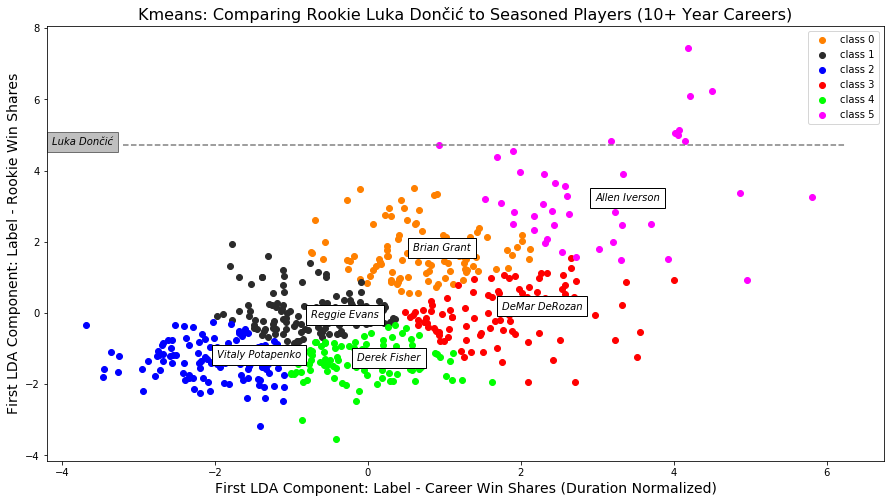

NBA teams win or lose games based on the number of win shares their players create. Being able to predict the career performance of a player in their rookie season is important to team management because it allows them to make better draft, trade, and personnel decisions to give their organization the best opportunity of winning a championship.
The goal of this project is to forecast a player’s career win shares (number of wins attributable to a player) per season based on their rookie metrics.
